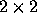
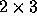

| Another Puzzling Problem |
You are to write a program to solve jigsaw puzzles. The input file will contain the dimension of the puzzle, the dimension of the pieces, and the actual pieces of the puzzle. The pieces will be made up of ASCII characters. You are to create an output file which consists of the solved puzzle.
Input file consists of one or more puzzles. The first line contains a integer N, the number of puzzles. Then, the description of each puzzle, as follows:
The first line of the input file will contain three integers. These are the dimension of the puzzle (puzzles are always square), and the height and width of the pieces, respectively. The dimension of the puzzle can range from 2 to 10, and the height and width of each puzzle piece can range from 1 to 25. For example, the input ``2 2 3'' (without the quotes, of course) specifies a puzzle that is  pieces in size, with individual pieces that are  characters in size. All pieces have the same height and width.
The rest of the description specifies the puzzle pieces in arbitrary order. Each piece is specified by an image of the piece followed by a line containing four integers ranging from -5 to +5. These values indicate the shape of the top, left, bottom and right edges of the puzzle piece, respectively. Values of 0 identify straight (i.e. outer) edges. Positive and negative edges of the same value are pairs that interlock (e.g -5 interlocks with +5, -4 with +4, etc.). Puzzle pieces may not be rotated, and all pieces will be unique (that is, no two pieces will have the same values for all four edges). A blank line separates each puzzle piece, and also different puzzles.
Note that spaces (ASCII character 32) are valid characters in a puzzle piece. If they appear at the end of a line (or are the only characters on a line), then they . All pieces will be a rectangular block of characters (ASCII codes 32 to 127), even if spaces at the end of a line make it appear differently. In short, spaces should be treated no differently than any other character.
The output file should simply contain the solved puzzle in the proper arrangement, two consecutives separated with a blank line. Each input puzzle will have one and only one solution.
2
2 2 3
OOC
BCC
-2 2 0 0
AOO
AAB
5 0 0 -2
XXY
XOO
0 0 -5 -5
YZZ
OOZ
0 5 2 0
2 8 14
88,
8888.
:8888b
8888
-.:888b
' d8888
,88888
':88888
0 3 -1 0
o8%88
o88%888
8'- -
8'
d8.-=. ,==
>8 `~` :`~
88
88b. `-~
0 0 -5 -3
.:88888
:::8888
:' 8888b
8888b
,%888b.
%%%8--'-.
_%-' --- -
.-' = --.
1 4 0 0
888b ~==~
88888o--:'
`88888| ::
8888^^'
d888
d88%
/88:.__ ,
'''::===.
5 0 0 -4
XXYYZZ
XOOOOZ
AOOOOC
AABBCC
o8%8888,
o88%8888888.
8'- -:8888b
8' 8888
d8.-=. ,==-.:888b
>8 `~` :`~' d8888
88 ,88888
88b. `-~ ':88888
888b ~==~ .:88888
88888o--:':::8888
`88888| :::' 8888b
8888^^' 8888b
d888 ,%888b.
d88% %%%8--'-.
/88:.__ , _%-' --- -
'''::===..-' = --.